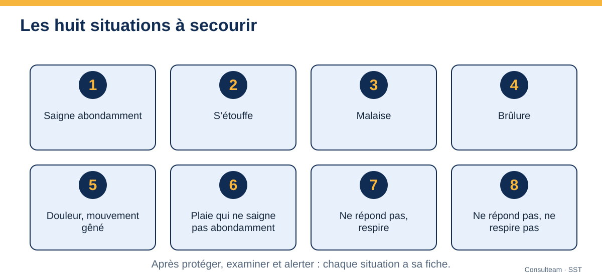
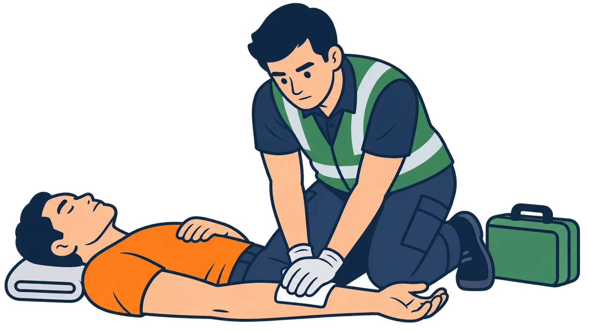
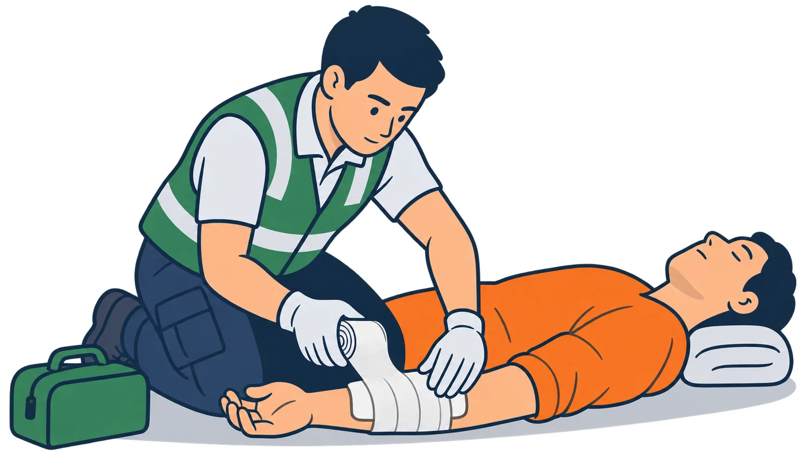
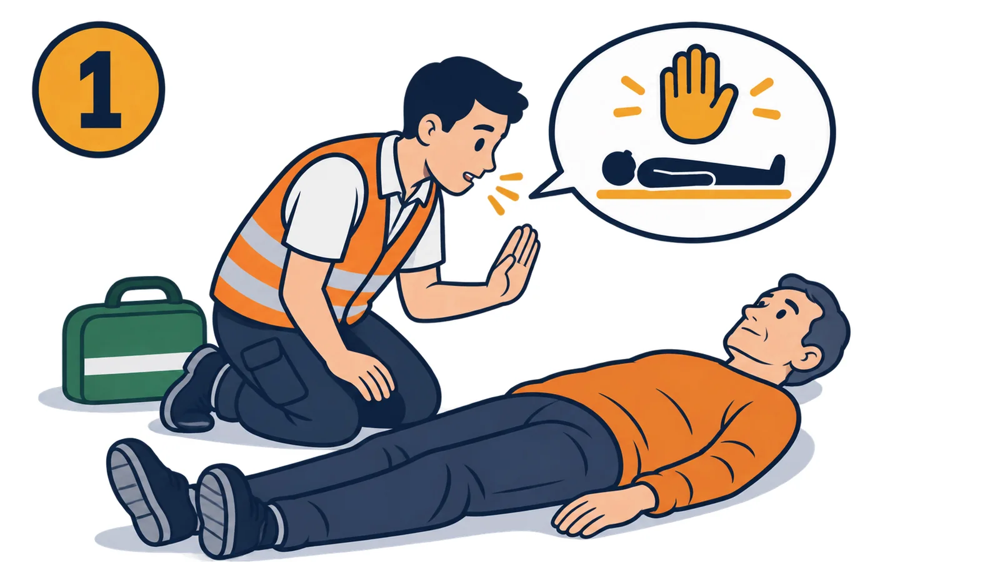

Sauveteur Secouriste du Travail
Aide-mémoire de l’apprenant
v0.3 · 14/11/2026
La démarche


Les huit situations

Texte reformulé à partir du Guide des données techniques V5.01 (2024) ; pour les gestes détaillés, se reporter au Guide.
1 · La victime saigne abondamment


Saignement qui imbibe un mouchoir en quelques secondes et ne s’arrête pas seul.
- Repérer l’origine du saignement.
- Faire comprimer immédiatement l’endroit qui saigne par la victime, sinon le faire soi-même.
- Maintenir la compression et allonger la victime.
- Faire alerter, ou alerter en haut-parleur sans lâcher la compression.
- Si la compression d’un membre est inefficace ou impossible (nombreuses victimes, plaie inaccessible, corps étranger…) : garrot quelques centimètres au-dessus de la plaie, entre le cœur et la plaie. Garrot industriel de préférence.
- Si la compression est efficace, un pansement compressif peut la remplacer. S’il saigne à nouveau : compression par-dessus, puis garrot.
- Surveiller, parler, protéger du froid et de la chaleur ; si aggravation (sueurs, pâleur, absence de réponse), agir et rappeler les secours.
À noter : Pas de garrot au cou, au thorax ni à l’abdomen. Se protéger du sang : gants ou sac plastique, lavage des mains, retrait rapide des vêtements souillés ; en cas de contact, protocole du médecin du travail.
2 · La victime s’étouffe
Obstruction complète des voies aériennes : elle ne peut plus parler, tousser ni respirer.
- De 1 à 5 claques vigoureuses dans le dos, victime penchée en avant.
- Sans effet : de 1 à 5 compressions abdominales (Heimlich) chez l’adulte, le grand enfant et l’enfant qui tient sur la cuisse.
- Nourrisson sur l’avant-bras, femme enceinte ou personne obèse (abdomen impossible à encercler) : de 1 à 5 compressions thoraciques.
- Recommencer claques puis compressions tant que l’obstruction persiste.
- Dès les signes de désobstruction (rejet, toux, cris, respiration) : arrêter, installer confortablement, faire alerter, surveiller.
- Si elle perd connaissance : l’accompagner au sol, faire alerter, RCP, et vérifier la bouche après chaque cycle de compressions.
À noter : Cas particulier : victime consciente, alitée et difficilement mobilisable, compressions thoraciques comme pour le massage cardiaque. Les gestes diffèrent selon le gabarit : voir tableaux 8 à 12 du Guide.
3 · La victime se plaint d’un malaise

Observer d’abord, puis mettre au repos.
- Observer les signes d’apparition soudaine, même brefs : AVC (faiblesse ou paralysie d’un bras, déformation du visage, trouble de la vision, difficulté de langage, mal de tête sévère inhabituel, perte d’équilibre), accident cardiaque (douleur dans la poitrine), maladie infectieuse (fièvre, frissons, sueurs, courbatures), autres signes (douleur abdominale intense, difficulté à respirer ou parler, sueurs sans effort, pâleur intense).
- AVC ou douleur thoracique : prise en charge urgente, faire alerter sans attendre.
- Mettre au repos : allongée confortablement ou dans la position où elle se sent le mieux ; assise en cas de gêne respiratoire ; desserrer les vêtements, rassurer.
- Si infection possible : gestes barrières, masque pour la victime, consignes de l’entreprise ou des autorités.
À noter : Chez une peau foncée, la pâleur se juge à la face interne des lèvres. Suivre les consignes du service de secours.
4 · La victime se plaint de brûlures

Brûlure simple ou grave ? Le danger est aussi pour le sauveteur.
- Vêtements enflammés : empêcher de courir, étouffer les flammes avec un vêtement ou une couverture, rouler au sol.
- Refroidir tout de suite par de l’eau courante tempérée, au moins 10 minutes, idéalement 20.
- Retirer vêtements et bijoux sur ou près de la brûlure, sauf ce qui adhère.
- Évaluer la gravité : brûlure grave si cloques de surface supérieure à la moitié de la paume de la victime, destruction profonde, visage, cou, mains, articulations, orifices, rougeur étendue chez l’enfant, origine chimique, électrique ou radiologique.
- Brûlure grave : faire alerter dès le début de l’arrosage, poursuivre le refroidissement, mettre au repos, surveiller.
À noter : Brûlure chimique : arroser pour rincer (tableau 14). Dans tous les cas, suivre le protocole du médecin du travail s’il existe.
5 · Douleur empêchant certains mouvements

Cou, tête, membre : ne pas aggraver, faire alerter.
- Cou après traumatisme : demander de ne pas bouger la tête, faire alerter, stabiliser si possible le rachis cervical dans la position trouvée, surveiller.
- Coup sur la tête avec agitation, vomissements, trou de mémoire, maux de tête persistants ou engourdissement : allonger, faire alerter, surveiller.
- Membre : demander de ne pas mobiliser, faire alerter, suivre les consignes des secours, surveiller.
À noter : Ne pas tenter de réaligner une fracture déplacée.
6 · Plaie qui ne saigne pas abondamment

Plaie simple ou plaie grave ?
- La gravité dépend du mécanisme (projectile, liquide sous pression, piqûre de matériel de soin, outil, morsure, objet tranchant), de l’aspect (corps étranger, chairs écrasées, membre sectionné), de la localisation (cou, œil, face, orifice naturel, thorax, abdomen), des conséquences (extrémité qui ne bouge plus, fourmillements, froid) et des antécédents médicaux.
- Plaie simple : la nettoyer et la protéger (tableau 18).
- Plaie grave : position d’attente (thorax : assis, plaie à l’air libre ; abdomen : allongé jambes fléchies ; œil : allongé, yeux fermés), faire alerter, surveiller.
- Membre sectionné : récupérer le segment et les fragments et les conditionner (tableau 17).
À noter : Voir le Guide pour les positions d’attente et les consignes de nettoyage.
7 · Elle ne répond pas mais elle respire
Respiration normale : liberté des voies aériennes.
- Événement non traumatique : mettre en position latérale de sécurité (PLS), faire alerter, surveiller la respiration.
- PLS de préférence sur le côté gauche pour une femme enceinte ou une personne obèse ; à défaut sur le côté droit.
- Événement traumatique ou origine inconnue : la laisser sur le dos en maintenant la bascule de la tête (adulte, enfant) ou la tête en position neutre (nourrisson).
- Nourrisson : le placer sur le côté dans les bras du SST. Enfant : même conduite que l’adulte.
- Convulsions : ne pas toucher, écarter les objets dangereux, examiner à la fin, PLS si besoin.
À noter : En période épidémique, apprécier la respiration sans se pencher au-dessus du visage ni basculer la tête.
8 · Elle ne répond pas et ne respire pas
Arrêt cardiaque : alerte, RCP, DAE, le plus tôt possible.
- Témoin présent : le faire alerter et apporter un DAE ; commencer la RCP tout de suite ; mettre en œuvre le DAE dès son arrivée en suivant l’appareil ; continuer jusqu’aux secours.
- Sans témoin : alerter en haut-parleur, débuter la RCP ; aller chercher le DAE seulement s’il est proche et accessible sans quitter la victime plus de 10 secondes.
- Adulte : cycles de 30 compressions et 2 insufflations, 100 à 120 compressions par minute, enfoncement d’environ 5 cm sans dépasser 6 cm.
- Enfant et nourrisson : commencer par 5 insufflations, puis cycles de 15 compressions et 2 insufflations.
- Insufflations impossibles ou SST qui ne s’en sent pas capable : compressions continues.
- Ne jamais retirer les électrodes ni éteindre le DAE avant les secours. À deux SST : l’un comprime, l’autre insuffle, relais toutes les 2 minutes pendant l’analyse du DAE.
À noter : Enfant et nourrisson : électrodes pédiatriques si disponibles, sinon électrodes adulte au milieu du thorax et au milieu du dos.
Prévenir


Numéros d’urgence
15 SAMU · 18 pompiers · 112 européen · 114 par SMS, visio ou tchat.